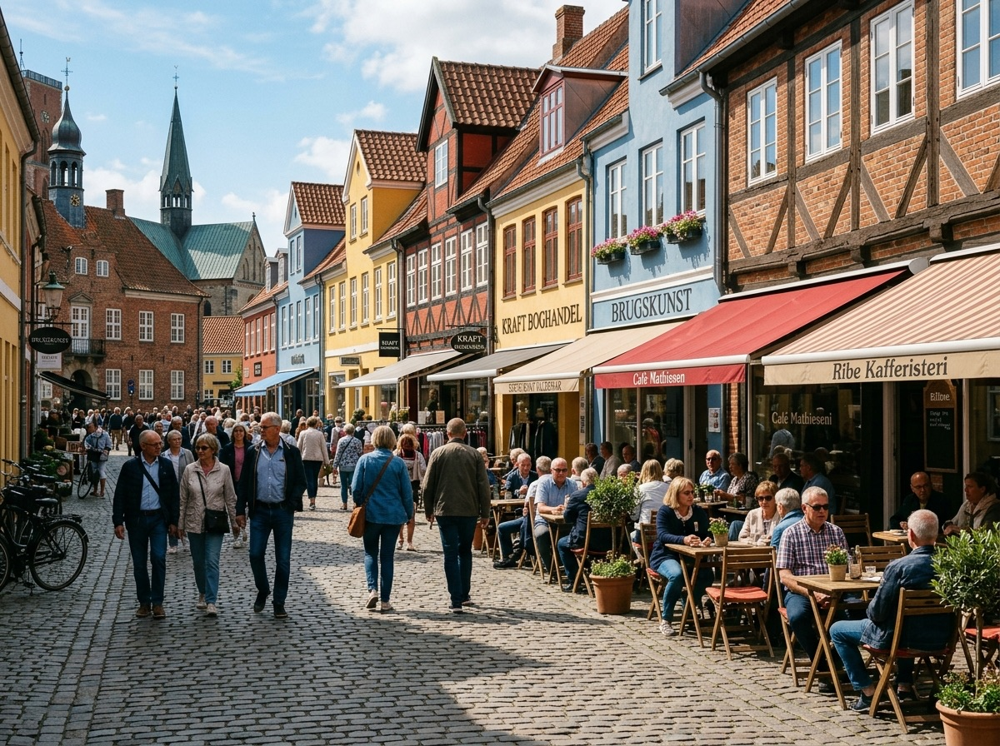
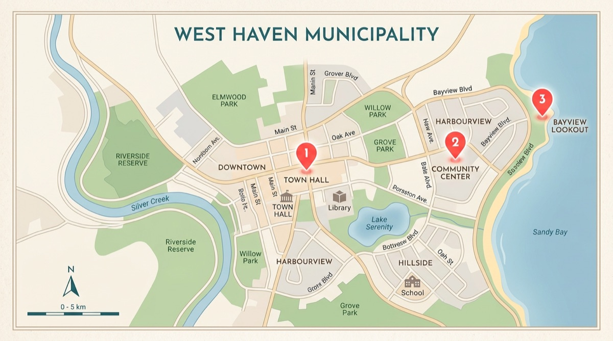
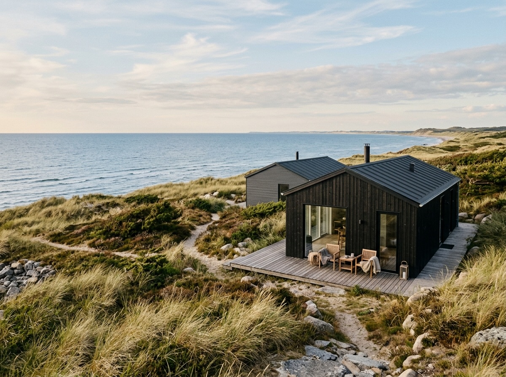
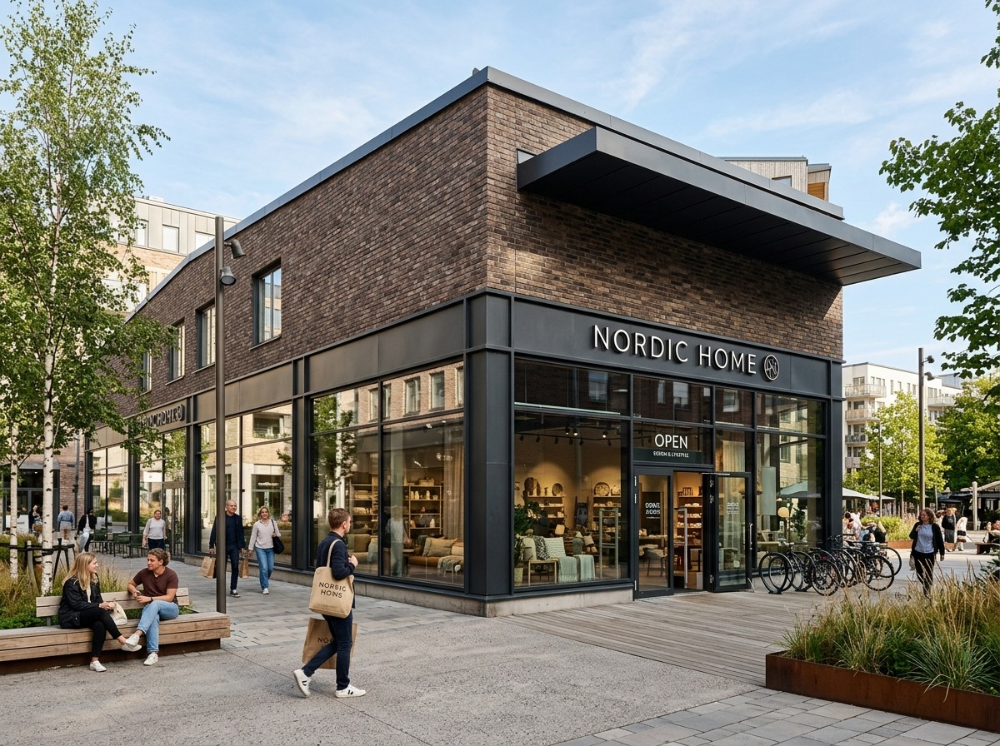
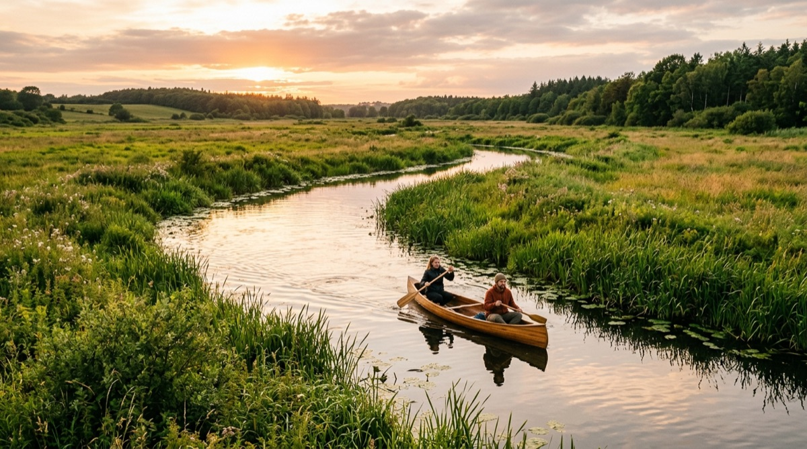
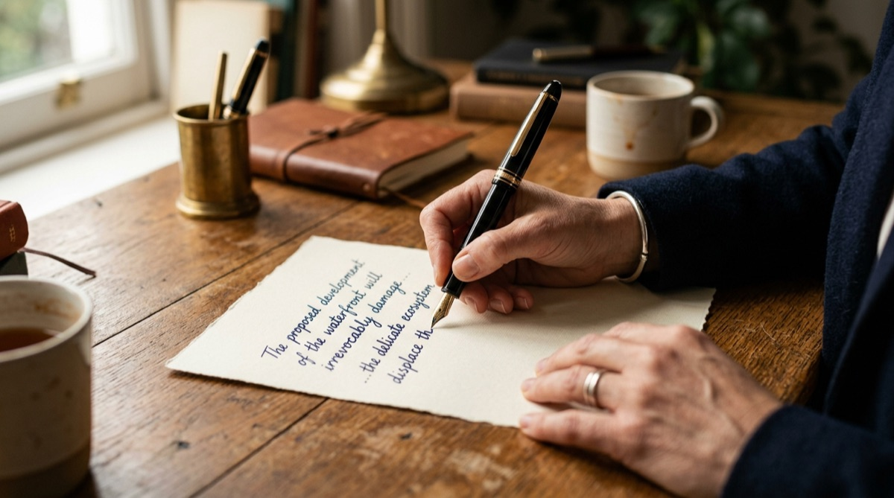

POLITIK · SLAGELSE BY
Nyt flertal på rådhuset vil investere 45 millioner i bymidten
En bred aftale mellem fem partier skal puste nyt liv i gågaden og torvet med mere grønt og færre tomme butiksvinduer.


Nyheder tæt på dig. Vælg område.
En bred aftale mellem fem partier skal puste nyt liv i gågaden og torvet med mere grønt og færre tomme butiksvinduer.

Politiet opfordrer grundejere til at sikre boliger, efter flere tyverier i weekenden.

Kæden etablerer 800 m² butik på tidligere industrigrund og skaber 20 nye jobs.

Fra lokal fodbold til musik og markeder – her er ugens bedste oplevelser i kommunen.

Nyt projekt skal reducere oversvømmelser og styrke biodiversiteten i vandløbet.

Vi har råd til at tænke længere frem, skriver lokal debattør om kommunens retning.
Flere lærlingepiloter skal sikre, at unge faglærte bliver i kommunen efter endt uddannelse.